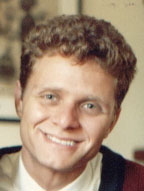

|
Jay Lepreau |
John Carter |

Godmar Back |
Kevin Van Maren |

Patrick Tullmann |
|
Sunghee "Sunny" Kim |
Karlyn Bond |
Candace Christensen |
Melissa Armstrong |
Rizwan Mallal |
Saira Khan |
Anna Winkler |
Zarrin Reynolds |
Stephen Starkey |
From the Flux group at the University of Utah:
|
Jay Lepreau |
John Carter |
Godmar Back |
Kevin Van Maren |
Patrick Tullmann |
|
Jochen Liedtke |
Jonathan Shapiro |
Erich Boleyn |
Carl Waldspurger |
Peter Lee |

George Necula |
Dawson Engler |
From my Amiga days:

Stefan Walter |

Daniel Weber |
Urban Mueller |
Markus Wild |
The Bush Doktor |
From Rwanda:
| 
Paulo Menegusso |
Claudio Menegusso |
Mike Stafford |
Roger Amorim |
Susie Amorim |
Mernyl Gallego |

Mike Lenhardt |